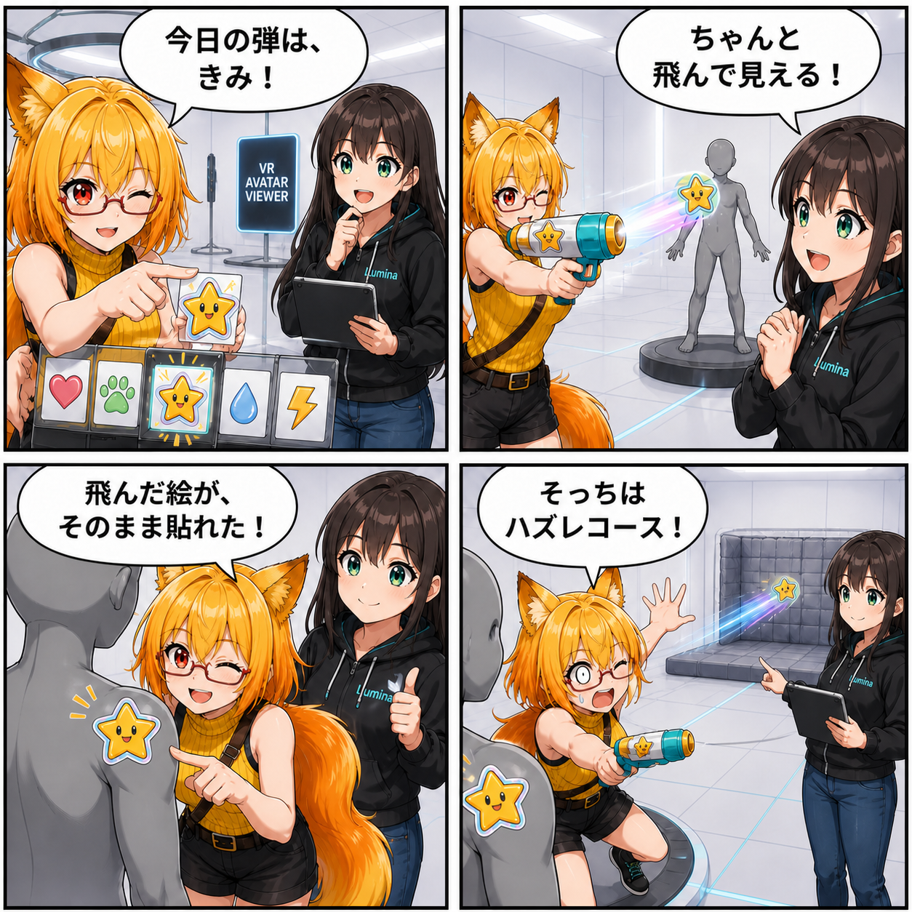

2026.08.29 / Development Log
飛んでいる途中もステッカー。水鉄砲の弾を見えるようにした日
水鉄砲から選んだPNGを、命中後だけでなく飛んでいる途中から見えるようにしました。同じ絵柄が銃口を飛び出し、そのままアバター表面へ貼り付きます。
Viewerの
main ブランチでは集計期間内に8件のコミットがありました。終了時点のHEADは b2d10c7（Androidインストール設定を更新）、期間全体では17ファイル、2,082行追加、507行削除です。現在のViewer作業ツリーには未コミット差分がありますが、実装日を確定できないため本日の実績には含めていません。集計期間は 2026-08-28 03:00:00 JST から 2026-08-29 02:59:59 JST までです。
弾がどこへ飛んだかを目で追える
従来の水鉄砲は銃口からRayを飛ばし、命中したアバター表面へステッカーを投射していました。今回の変更では、カテゴリから選ばれたステッカー画像を透明対応のQuadへ載せ、銃口から命中点まで補間して動かします。
飛行時間は距離と速度から求め、短すぎたり長すぎたりしない設定範囲へ収めます。弾はカメラへ向くため、薄い画像でも飛行中の絵柄を視認できます。
飛んだ絵と、貼り付く絵が同じ
発射時にカテゴリからPNGを1枚選び、そのTextureを可視弾へ使います。命中時には同じTextureを SurfaceStickerDecalRequest へ渡すため、飛んでいた絵柄がそのままアバター表面へ貼り付きます。
命中点は飛行中に対象が動いても追従できるよう、対象Transformのローカル座標とローカル法線で保持し、貼り付け時にワールド座標へ戻します。
外れた弾も、すぐには消えない
アバターへ命中しなかった場合も、弾は銃口で即座に消えず、遮蔽物または設定された可視距離まで飛びます。その後は命中しなかった状態を通知し、生成したQuad、Material、Textureを解放します。
技術的なポイント
- 選択したPNGを透明対応の可視Quadへ設定
- 距離と設定速度から飛行時間を求め、銃口から到達点まで補間
- カメラへ向けて絵柄を飛行中も見やすく表示
- 命中時は可視弾と同じTextureをアバター表面へ投射
- ミス時も短い可視距離を飛ばし、完了後に一時リソースを解放
ほかにも進んだこと
- AIポーズモデルの読込タイムアウト修正
- UIテーマ調整ツールの改善
- VRコントローラーの手モデルとコライダー補正の同期
- VR UI Prefabの操作判定とClear Blue操作状態仕様の更新
- Meta XR RuntimeとAndroidインストール設定の更新
4コマの裏話
ステッカー弾の視点に寄せ、棚から選ばれた一枚が銃口を飛び出し、同じ絵柄のままアバターへ着地する旅として描きました。最後は外れた一枚までちゃんと飛んでいく様子を、ろひが慌てて見送るオチです。
まとめ
水鉄砲のステッカーは、発射結果だけでなく飛行経路も見えるようになりました。選ばれたPNGを可視弾と貼り付けの両方へ使い、命中時もミス時も弾の動きを追える実装です。
本日のひとこと： 貼り付く前から、もうステッカー。